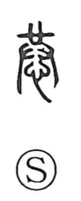

恭

Uncategorized
Kun: uyauyashii, tsutsushimu | On: kyo
respectful ・ reverent ・ deferential
Explanation
恭 is a phono-semantic character formed by placing “heart” beneath 共. 共 serves as the phonetic and originally depicted hands respectfully presenting a sacred curse vessel in ritual, with the posture of reverent bowing—hence ideas of mindful restraint and respect. To make explicit the inner attitude of veneration, the heart component was added below 共, creating 恭 and preserving that original sense when 共 later came to mean “together.” In bronze inscriptions, 恭 already carried the meaning of tsutsushimu: to act with careful reverence.